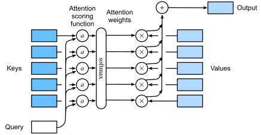

Attention Scoring Functions¶
As nadaraya-watson kernel regression, the main type of attention mechanism:

Mathematically, suppose that we have a query \(\mathbf{q}\in\mathbb{R}^{q}\) and \(m\) key-value pairs \((\mathbf{k}_{1}, \mathbf{v}_{1}),...,(\mathbf{k}_{m}, \mathbf{v}_{m})\) where \(\mathbf{k}_{i}\in\mathbb{R}^{k}\) and \(\mathbf{v}_{i}\in\mathbb{R}^{v}\) .
The attention pooling 𝑓 is a weighted sum of the values:
where \(a\) is the attention scoring function.
Masked Softmax Operation¶
In some cases, not all the values should be fed into attention pooling, e.g. padding tokens.
import torch
from torch import nn
import d2l
#@save
def masked_softmax(X, valid_lens):
"""Perform softmax operation by masking elements on the last axis."""
# `X`: 3D tensor, `valid_lens`: 1D or 2D tensor
shape = X.shape
if valid_lens.dim() == 1:
valid_lens = torch.repeat_interleave(valid_lens, shape[1])
else:
valid_lens = valid_lens.reshape(-1)
# On the last axis, replace masked elements with a very large negative
# value, whose exponentiation outputs 0
X = d2l.sequence_mask(X.reshape(-1, shape[-1]), valid_lens,
value=-1e6)
return nn.functional.softmax(X.reshape(shape), dim=-1)
Additive Attention¶
In general, when queries and keys are vectors of different lengths, we can use additive attention as the scoring function.
Given a query \(\mathbf{q} \in \mathbb{R}^{q}\) and a key \(\mathbf{k} \in \mathbb{R}^{k}\) , the additive attention scoring function
where learnable parameters \(\mathbf{W}_{q} \in \mathbb{R}^{h\times{q}}, \mathbf{W}_{k} \in \mathbb{R}^{h\times{k}}\), and \(\mathbf{w}_{h} \in \mathbb{R}^{h}\).
#@save
class AdditiveAttention(nn.Module):
def __init__(self, key_size, query_size, num_hiddens, dropout):
super(AdditiveAttention, self).__init__()
self.W_k = nn.Linear(key_size, num_hiddens, bias=False)
self.W_q = nn.Linear(query_size, num_hiddens, bias=False)
self.w_v = nn.Linear(num_hiddens, 1, bias=False)
self.dropout = nn.Dropout(dropout)
def forward(self, queries, keys, values, valid_lens):
# `queries` shape: (`batch_size`, no. of queries, `query_size`)
# `keys` shape: (`batch_size`, no. of key-value pairs, `key_size`)
# `values` shape: (`batch_size`, no. of key-value pairs, `value_size`)
# `valid_lens` shape: either (`batch_size`,) or (`batch_size`, no. of queries)
queries, keys = self.W_q(queries), self.W_k(keys)
# After dimension expansion, shape of `queries`: (`batch_size`, no. of
# queries, 1, `num_hiddens`) and shape of `keys`: (`batch_size`, 1,
# no. of key-value pairs, `num_hiddens`). Sum them up with broadcasting
features = queries.unsqueeze(2) + keys.unsqueeze(1)
features = torch.tanh(features)
# Shape of `scores`: (`batch_size`, no. of queries, no. of key-value pairs)
scores = self.w_v(features).squeeze(-1)
self.attention_weights = masked_softmax(scores, valid_lens)
# Output shape: (`batch_size`, no. of queries, `value_size`)
return torch.bmm(self.dropout(self.attention_weights), values)
Scaled Dot-Product Attention¶
A more computationally efficient design is dot product, it requires the query and the key have the same size, say \(d\) .
To retain variance, the dot-product divides by \(\sqrt{d}\) :
Computing in minibatches, the scaled dot-product attention of queries \(\mathbf{Q}\in\mathbb{R}^{n\times{d}}\) , keys \(\mathbf{K}\in\mathbb{R}^{m\times{d}}\) , and values \(\mathbf{V}\in\mathbb{R}^{m\times{v}}\) is:
#@save
class DotProductAttention(nn.Module):
"""Scaled dot product attention."""
def __init__(self, dropout):
super(DotProductAttention, self).__init__()
self.dropout = nn.Dropout(dropout)
def forward(self, queries, keys, values, valid_lens=None):
# Shape of `queries`: (`batch_size`, no. of queries, `d`)
# Shape of `keys`: (`batch_size`, no. of key-value pairs, `d`)
# Shape of `values`: (`batch_size`, no. of key-value pairs, `value_size`)
# Shape of `valid_lens`: (`batch_size`,) or (`batch_size`, no. of queries)
d = queries.shape[-1]
# Shape of `scores`: (`batch_size`, no. of queries, no. of key-value pairs)
scores = torch.bmm(queries, keys.transpose(1, 2)) / math.sqrt(d)
self.attention_weights = masked_softmax(scores, valid_lens)
# Output shape: (`batch_size`, no. of queries, `value_size`)
return torch.bmm(self.dropout(self.attention_weights), values)